Winston Churchill 1946-ban
A szembenálló tömbök kialakulása
Az Európai Kép és a Politikai Megosztottság
A második világháború végére a két győztes nagyhatalom, az Egyesült Államok és a Szovjetunió
között egyre nehezebbé vált a korábbi szövetség fenntartása, mivel ellentétes ideológiai alapjaik
és nagyhatalmi versengésük felerősödtek. Mindkét fél megpróbálta biztosítani befolyását az általa
megszállt európai országokban, és katonai szövetségeket hozott létre. 1949-ben az
Egyesült Államok vezetésével Nyugat-Európában megalakult az Észak-atlanti Szerződés Szervezete
(NATO), míg 1955-ben a Szovjetunió irányításával Kelet-Európában létrejött a Varsói Szerződés.

A Szovjetunió által befolyásolt országokban, mint például a Német Demokratikus Köztársaság,
Lengyelország, Csehszlovákia, Magyarország, Románia és Bulgária, először szovjetbarát kormányok
alakultak. Ezt követően a szovjet hatalom a közép- és nagyvállalatok államosításával, valamint
földreformokkal próbálta elnyerni a szegényebb rétegek támogatását. Emellett a közigazgatás
„megtisztításával” igyekeztek gyengíteni a nem kommunista erők befolyását. 1947 szeptemberében
létrejött a Kominform (Kommunista és Munkáspártok Tájékoztató Irodája), amely irányította a
kommunista pártokat, és biztosította, hogy a szovjet politikai irányvonal egységesen érvényesüljön
az általuk dominált országokban. Az egyetlen kivételt Jugoszlávia jelentette,
amely Josip Broz Tito vezetésével ellentétes irányvonalat képviselt a Szovjetunióval.
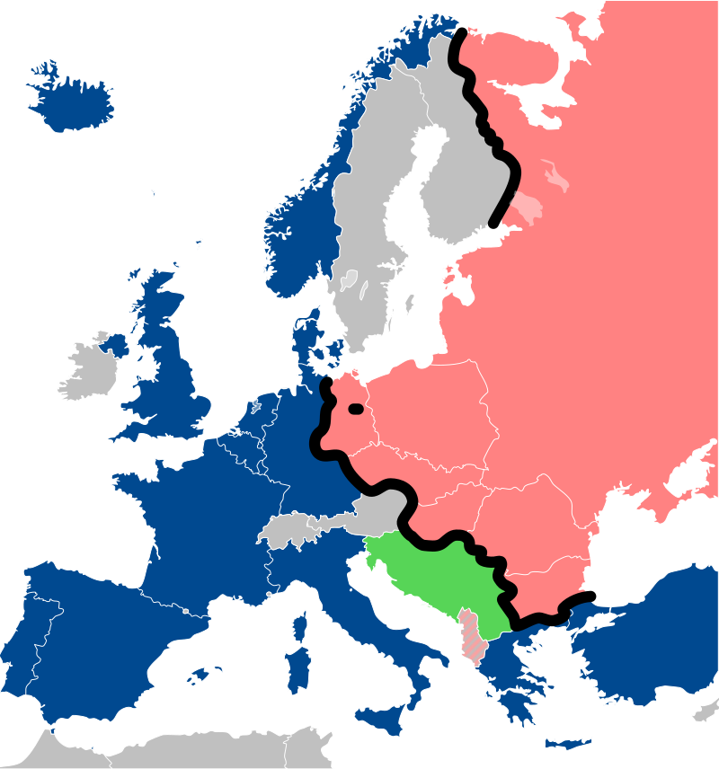
A szuperhatalmak első lépései
A második világháborút követően Görögországban a polgárháború kiéleződésében fontos szerepet játszott a kommunisták Jugoszlávia általi támogatása.
Eközben Franciaországban és Olaszországban a kommunista pártok sikeres választási eredményeket értek el. Kínában Mao Ce-tung vezetésével hamarosan szilárd
kommunista hatalom épült ki.
A szovjet fenyegetés - legyen az valós vagy vélt - hatására Harry S. Truman amerikai elnök 1947-ben meghirdette a Truman-doktrínát, amelynek célja a
kommunizmus terjedésének megfékezése volt (containment politika). Truman szerint a háború utáni helyzet különösen kedvezett a kommunizmus terjedésének.
A kommunizmus nyugat-európai terjedésének megakadályozására az Egyesült Államok 1947-ben elindította a Marshall-tervet. Ennek keretében mintegy 14 milliárd
dolláros segéllyel kívánták helyreállítani a háborúban elpusztult gazdaságokat. Azok az országok, ahol nem tartózkodott szovjet hadsereg, elfogadták a támogatást.
Az amerikai segítség gyors eredményeket hozott: például Franciaországban a kommunista párt 1981-ig kiszorult a kormányzásból.
A Szovjetunió 1947-ben válaszul egységes keleti blokkot hozott létre az irányítása alá tartozó országokból.
Andrej Zsdanov és Nyikolaj Voznyeszenszkij kidolgozta a „két világ” doktrínáját, amely kimondta, hogy a
kommunizmus és a kapitalizmus közötti összecsapás elkerülhetetlen. A nyugati országok válaszként létrehozták a COCOM-listát,
amely 1947-től kezdve a keleti blokk műszaki fejlődésének korlátozására szolgált.
A berlini blokád
Németország hamarosan a hidegháború középpontjába került, miután a második világháború lezárása óta
Franciaország, Nagy-Britannia, az Egyesült Államok és a Szovjetunió különböző megszállási övezetekre osztotta fel az országot. Nyugat-Berlin, amelyet a
szovjet övezet vett körül, csak légi úton, valamint autópályákon és vasúton volt megközelíthető.
1948-ban a francia, brit és amerikai zónák egyesültek, és az infláció megfékezése érdekében bevezették az új német márkát.
Ez felbőszítette Sztálint, aki a jaltai egyezmény ellenére meg akarta
szerezni Nyugat-Berlin irányítását. Ennek érdekében 1948. június 23-án blokád alá vonta a várost.
Az amerikaiak válaszul egy hatalmas légihidat szerveztek a város ellátására, melynek során az úgynevezett „mazsolabombázók” élelmiszert,
szenet és egyéb szükséges árukat szállítottak Berlinbe. Majdnem egy éven át, óránként egy tucat repülőgép landolt a város nyugati repülőterein.
Végül, 1949. május 12-én Sztálin kénytelen volt elismerni a blokád kudarcát, és feloldotta azt.
A blokád következményeként a nyugati megszállási övezetekből létrejött a Német Szövetségi Köztársaság, amelynek fővárosa Bonn lett. Ezzel szemben a
szovjet zónából megalakult a Német Demokratikus Köztársaság, fővárosául Berlint választva. A két országot elválasztó határ, amely később a berlini fallá alakult,
a hidegháború egyik legismertebb szimbólumává vált.
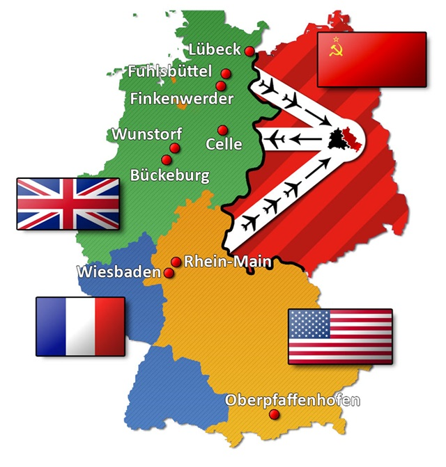
A Kínai Népköztársaság megalakulása
Kínában az 1910-es évektől polgárháború dúlt a Mao Ce-tung vezette kommunisták és a Csang Kaj-sek irányította Kuomintang között.
A második világháborút követően a kommunistákat a Szovjetunió támogatta, míg a Kuomintangot az Egyesült Államok segítette. Az amerikai támogatás azonban
idővel megszűnt, és 1949-re a Kínai Kommunista Párt szinte az egész országot ellenőrzése alá vonta.
1949. október 1-jén Pekingben kikiáltották a Kínai Népköztársaságot. Csang Kaj-sek kénytelen volt Tajvan szigetére menekülni,
ahol egy különálló, szakadár államot hozott létre. A két Kína - hasonlóan a két Németországhoz - kölcsönösen nem ismerte el egymást.
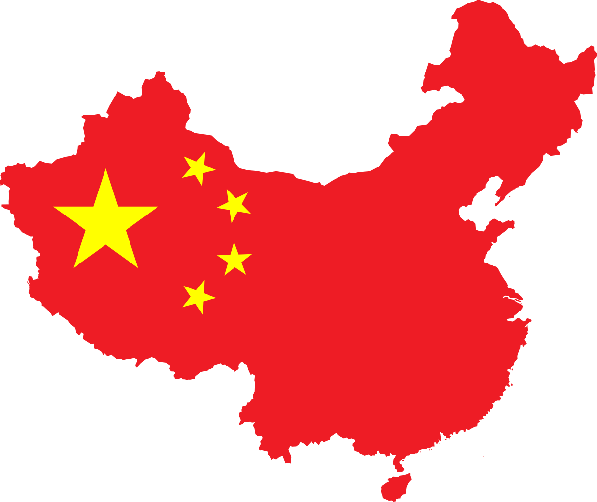
A koreai háború 1950-1953
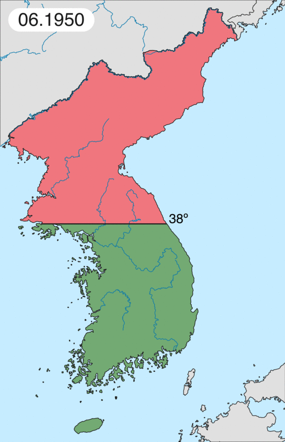
A második világháború után Korea két részre szakadt: az északi részt a Szovjetunió, a délit pedig az Egyesült Államok támogatta.
1950. június 25-én Észak-Korea, a kommunista Kim Ir Szen vezetésével, megtámadta Dél-Koreát.
Az ENSZ – főként amerikai csapatokkal – beavatkozott a déliek védelmében, és sikerült visszaszorítani az északiakat.
A kínai kommunista kormány azonban Észak-Korea oldalán beavatkozott, és a frontvonal a 38. szélességi kör környékén stabilizálódott.
A háború három évnyi pusztítás és több millió halott után 1953. július 27-én fegyverszünettel zárult, de békeszerződést soha nem kötöttek.
Korea továbbra is két különálló állam maradt, Észak-Korea kommunista diktatúraként, míg Dél-Korea később demokratikus állammá fejlődött.
A konfliktus máig meghatározza a Koreai-félsziget politikai helyzetét.
Válságok és újabb konfliktusok megjelenése
Sztálin halála és a XX. kongresszus
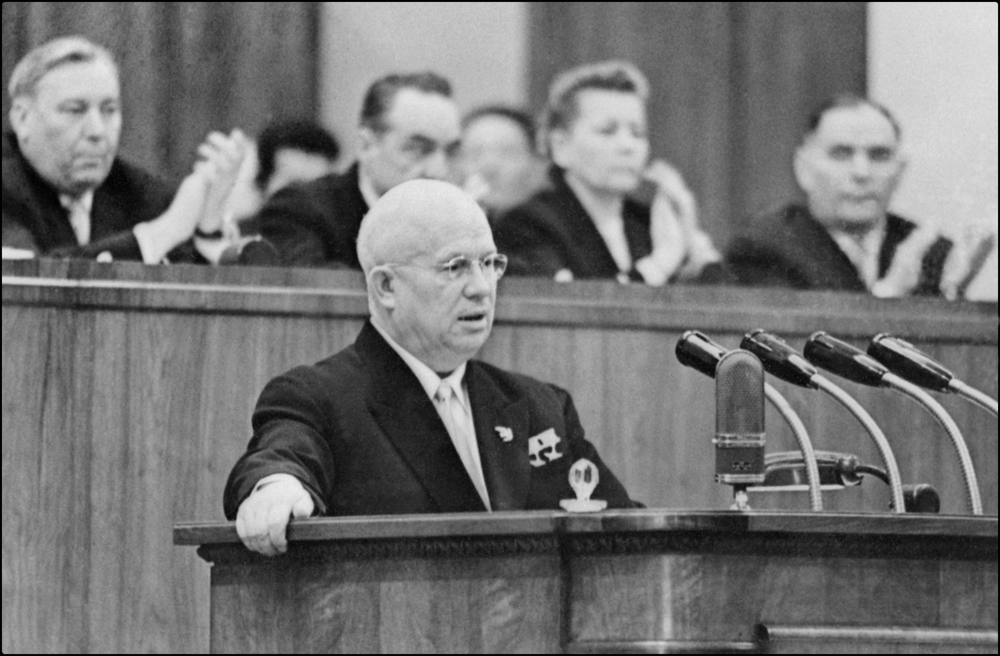
1953-ban Joszif Visszarionovics Sztálin meghalt. A kórboncnoki jelentés szerint Sztálin halálát agyvérzés okozta.
A visszaemlékezések szerint rosszulléte után egész éjszaka egyedül feküdt a földön, orvosi ellátás nélkül. Halálát követően utódja,
Nyikita Szergejevics Hruscsov a Szovjet Kommunista Párt XX. kongresszusán elítélte
Sztálin diktatórikus intézkedéseit, és bejelentette a békés egymás mellett élés politikáját.
Ezt a lépést a nyugati hatalmi blokk az "enyhülés" kifejezéssel illette.
forradalmak és szabadságharc
A hidegháborús légkörben a szovjet blokk országaiban egyre nőtt a feszültség, ahogy az emberek elkeseredtek a politikai elnyomás, a gazdasági nehézségek és
a szovjet befolyás miatt. A forradalmak, bár különböztek a helyi körülményektől függően, közös jellemzője volt a szovjet elnyomás elleni harc és a szabadságvágy.
Magyarországon 1956-ban robbant ki a legnagyobb forradalom, amely az egyik legjelentősebb lázadás volt a Szovjetunió ellen Kelet-Európában.
A magyar nép a Rákosi diktatúra brutális uralma, a gazdasági válság és a szovjet megszállás elleni tiltakozásként kezdett el demonstrálni.
A forradalom október 23-án kezdődött, amikor diákok és munkások Budapest belvárosában kifejezték elégedetlenségüket a kommunista rezsimmel.
A felkeléshez hamarosan csatlakoztak a katonák és a lakosság szélesebb rétegei is. A forradalom célja a szovjet csapatok kivonása és egy demokratikusabb,
független Magyarország létrehozása volt. A felkelők elérték, hogy Nagy Imre, a reformkommunista politikus visszatérjen a hatalomba, és reformokat ígért.
Azonban a szovjetek nem hagyták annyiban, és november 4-én a szovjet hadsereg brutálisan
leverte a forradalmat, miközben a világ figyelme a magyar szenvedésre irányult. Az események következtében sok ezer ember vesztette életét,
és a forradalom elfojtása után a szovjetek újabb kemény diktatúrát vezettek be Magyarországon.
Lengyelországban 1956-ban szintén forradalmi események zajlottak, bár a lengyel felkelés nem volt olyan nyílt és véres, mint a magyar.
Lengyelországban az elégedetlenség a sztálini repressziók és a gazdasági nehézségek miatt nőtt.
A lengyel munkások és szakszervezetek 1956-ban Poznańban kezdtek el tiltakozni, és a demonstrációk erőszakos összecsapásokká fajultak,
amit a szovjetek próbáltak elfojtani. Az események hatására a lengyel vezetés engedett, és Władysław Gomułka, egy reformista vezető került hatalomra,
aki szoros kapcsolatot keresett Moszkvával, de nem volt hajlandó teljes mértékben engedelmeskedni a szovjet parancsoknak. Ez a kompromisszumos megoldás
lehetővé tette Lengyelország számára, hogy bizonyos mértékig megőrizze függetlenségét, de továbbra is a szovjet érdekszférán belül maradt.
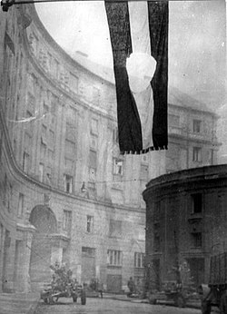
A Szuezi válság
A Szuezi-csatorna kulcsfontosságú kereskedelmi és hadászati útvonal összekötve a Földközi-tengert a Vörös-tengerrel.
A csatorna akkor az Egyesült Királyság és Franciaország irányítása alatt állt, míg Egyiptomban Gamal Abdel Nasser elnök hatalomra került, és
nacionalista politikát folytatott.
Nasser, hogy pénzügyi segítséget szerezzen a Szuezi-csatorna megépítése után felmerült újabb csatorna-felújítási
projektjéhez, úgy döntött, hogy államosítja a Szuezi-csatornát 1956. július 26-án. Ez a lépés különösen aggasztotta a
brit és francia kormányokat, mivel a csatorna fontos szerepet játszott kereskedelmi és
stratégiai érdekeikben, különösen az olajszállítmányok szempontjából.
A brit és francia kormányok, együttműködve Izraellel, titkos tervet dolgoztak ki a csatorna visszavételére.
1956 októberében Izrael katonai akciót indított Egyiptom ellen, és előrehaladva a csatorna felé, felkészültek egy
brit és francia katonai beavatkozásra. Az Egyesült Államok és a Szovjetunió, valamint a nemzetközi közösség azonban elítélte az agressziót,
és sürgette a felek azonnali tűzszünetet.
Az Egyesült Államok, amely a hidegháború idején igyekezett elkerülni a szovjetekkel való közvetlen konfrontációt,
komoly diplomáciai nyomást gyakorolt a brit-francia–izraeli szövetségre, hogy hagyjanak fel a katonai beavatkozással.
A nemzetközi diplomácia és az ENSZ közvetítésével 1956. november 6-án tűzszünetet hirdettek.
Bár a Szuezi-csatorna nem tért vissza brit és francia irányítás alá, Nasser politikai győzelmet aratott,
mivel nemcsak hogy megőrizte a csatorna ellenőrzését, hanem növelte népszerűségét is az arab világban.
A kubai rakétaválság
A kubai rakétaválság az atomháború közvetlen közelébe sodorta a világot. 1952 tavaszán Fidel Castro gerillái egyre több sikert értek el,
és 1959. január 2-án végül győztek, amikor bevonultak Havannába és megdöntötték Batista diktatúráját.
Hruscsov, a Szovjetunió vezetője, ekkor felajánlotta segítségét a még nem kommunista Castrónak.
Eközben kubai emigránsok, a CIA támogatásával, megpróbálták visszafoglalni Kubát a Disznó-öbölnél, de a küldetés kudarcot vallott.
A CIA ezt követően újabb terveket dolgozott ki Castro likvidálására, például olyan búvárruhát javasolva neki, amelyet tuberkulózissal átitatották,
mivel Castro szeretett búvárkodni. Ekkor Castro elfogadta a szovjet segítséget.
1962-ben a Szovjetunió öt közepes hatótávolságú rakétaezredet és négy motorizált lövészezredet telepített Kubába.
Október 15-én amerikai felderítők egy U-2-es repülőről lefényképezték a telepítéseket.
Az amerikai kormány véleménykülönbségekbe ütközött: a keményvonalas "héják" a háború melletti döntésre,
míg a "galambok" enyhébb válaszlépésre javasolták. John F. Kennedy, az amerikai elnök a galambok oldalán állt, és végül karantént (blokádot)
vezetett be Kubával szemben, miközben követelte a rakéták eltávolítását, 18 rakéta-robbanófej éppen úton volt Kuba felé.
Hruscsov nem akarta elkerülni a háborút, és kihátrált a helyzetből. Ezt Kennedy tudta, mivel amerikai hírszerzés révén titkos
információkat kapott Oleg Penykovszkij KGB-tiszt forrásaitól. Ennek segítségével Kennedy határozott lépéseket tett,
és mindössze két héttel a rakéták felfedezése után, azokat eltávolították Kubából, figyelmen kívül hagyva Castro és Che Guevara ellenkezését.
1962. november 20-án az Egyesült Államok hivatalosan is elismerte a kubai kormányt, ezzel gyengítve a Monroe-elvet, amely évtizedeken át érvényesült.
Kuba, a kommunista vezetésű állam, továbbra is „Amerika gyomrában” maradt. A titkos információkat szivárogtató Penykovszkijt 1963-ban a
Szovjetunióban halálra ítélték és kivégezték.
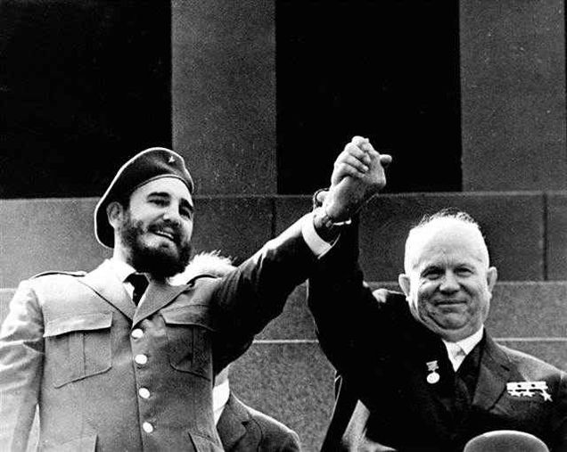
Fidel Castro és Hruszcsov
Megújult konfliktusok és a fegyverkezési verseny
A vietnámi háború
A vietnámi háború 1959 és 1975 között zajlott, és elsősorban Dél-Vietnám, valamint Kambodzsa és Laosz határmenti területein folyt szárazföldi harcokban,
míg Észak-Vietnám felett légiháborút vívtak. A konfliktus alapja a francia gyarmati hadsereg 1954-es végső veresége után ideiglenesen kettéosztott Vietnám
újraegyesítése volt. A háború ideológiai síkon zajlott, mivel Kína és a Szovjetunió támogatta a kommunista Észak-Vietnámot, míg az Egyesült Államok Dél-Vietnámot
támogatta. A két kommunista nagyhatalom versengett a délkelet-ázsiai befolyásért, míg az USA igyekezett megakadályozni a kommunizmus terjedését a
frissen függetlenné vált országokban.
A háború brutális, arcvonal nélküli gerillaháborúval zajlott,
amit a televízió is közvetített, és a hadkötelezettség ellenállásához vezetett az amerikai baloldalon, amely erősebb békemozgalmakat indított el.
Miközben a nyílt és titkos tárgyalások folytak, nem sikerült hosszú ideig megegyezniük a feleknek. Az Egyesült Államok Dél-Vietnám függetlenségét
próbálta biztosítani, ám Észak-Vietnám nem volt hajlandó lemondani követeléséről, miszerint minden külföldi
katona távozzon az országból, szűnjön meg a kettéosztottság és tartsanak választásokat,
amit a déli zűrzavaros politikai helyzete miatt nagy valószínűséggel a kommunisták megnyertek volna.
1972-ben végül az amerikai és az észak-vietnámi küldöttség megállapodott, de a dél-vietnámi kormány tudta nélkül.
Az Egyesült Államok már 1968-ban döntött a kivonulás mellett, de igyekezett ezt a lehető legkevesebb presztízsveszteséggel végrehajtani.
A békeszerződés aláírását követően 1973-ban az amerikai csapatok valóban elhagyták Vietnámot, de továbbra is hatalmas
katonai és anyagi támogatást nyújtottak a dél-vietnámi rezsimnek. Ennek ellenére Dél-Vietnám védelme nem tartott sokáig,
és Észak-Vietnám 1975-ben megszegve a békeszerződést lerohanta a déli területeket, elfoglalva Saigont,
amit egy évvel később Ho Si Minh-városra neveztek át. 1976-ban a két ország hivatalosan egyesült Vietnámi Szocialista Köztársaság néven.
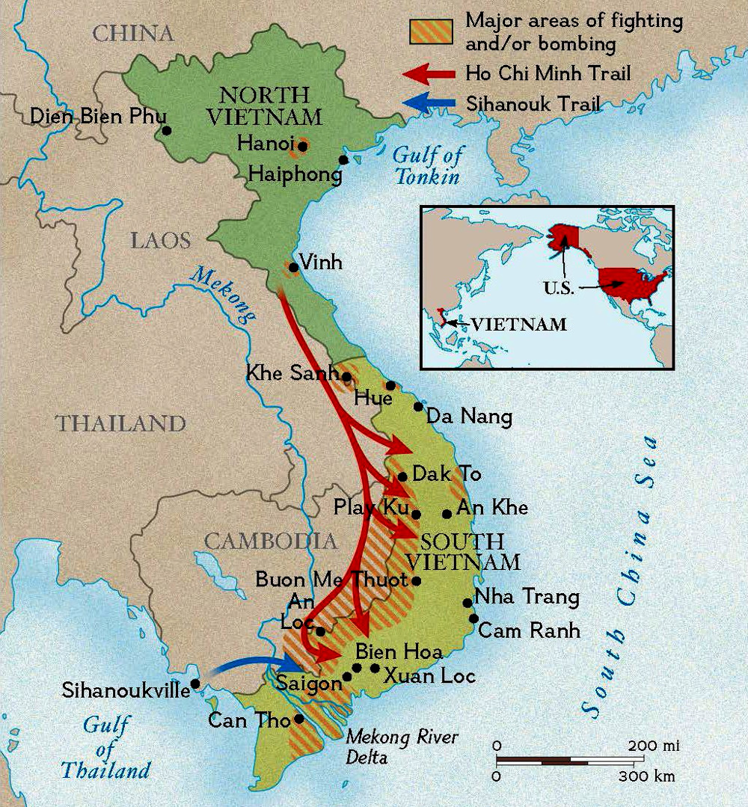
A Szovjetunió afganisztáni háborúja
A szovjet afganisztáni háború 1979 és 1989 között zajlott, amikor a Szovjetunió katonai beavatkozást indított Afganisztánban, hogy támogassa a
kommunista kormányt, amelyet 1978-ban puccsal emeltek hatalomra. A kommunista kormány, amely a szovjet modell szerint kívánta átalakítani
Afganisztánt, gyorsan elvesztette népszerűségét, és a különböző mujahedin lázadó csoportok fellázadtak.
A szovjetek, hogy megakadályozzák a kommunizmus bukását és megőrizzék befolyásukat a térségben, 1979 decemberében megszállták Afganisztánt,
és az országba 100 000 főt meghaladó szovjet katonát küldtek. A beavatkozás célja a kommunista kormány megvédése volt,
de az afgán ellenállás rendkívül kemény és kitartó volt. A mujahedin lázadók, akiket az Egyesült Államok, Pakisztán,
Kína és más országok támogattak fegyverekkel és pénzzel, hosszú időn keresztül sikeresen harcoltak a szovjet erők ellen.
A háború hosszú, véres és költséges konfliktussá vált, amely mindkét fél számára hatalmas áldozatokkal járt.
A szovjetek, akik meglepetésszerűen nagy ellenállással találkoztak, végül nem tudtak tartós győzelmet aratni.
A háború 1989-ben véget ért, amikor a Szovjetunió, belső problémákkal és a katonai kudarcok sújtotta haderővel, végül kivonta csapatait Afganisztánból.
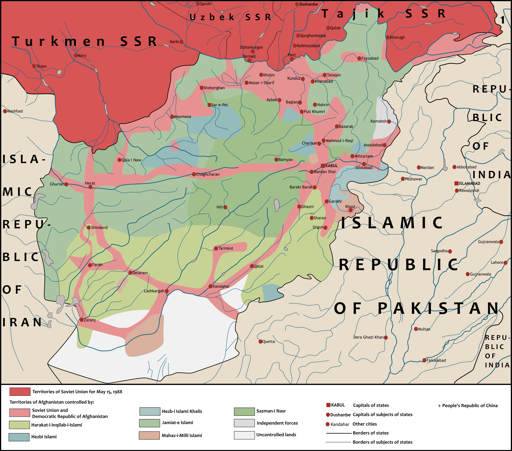
A fegyverkezési verseny
A hidegháború egyik meghatározó jellemzője a fegyverkezési verseny volt. A verseny technológiai és katonai területeken egyaránt kiemelkedő volt,
és számos tudományos felfedezést eredményezett.
Különösen a rakéták fejlesztése hozott jelentős előrelépést, amely végül az űrversenyhez vezetett.
Az első űreszközöket indító rakéták többsége katonai rakétákból származott.
A fegyverkezési verseny más területei közé tartozott: sugárhajtású repülőgépek, bombázó repülőgépek, felderítő repülőgépek és
műholdak, nukleáris, vegyi és biológiai fegyverek, légvédelmi rakéták, hagyományos tüzérség, levegő-levegő rakéták, interkontinentális
ballisztikus rakéták (ICBM), ballisztikus rakéták elhárító rendszerei (ABM), páncélozott járművek, automata lőfegyverek,
rakétameghajtású gránátok, tengeralattjárók és tengeralattjáróról indítható ballisztikus rakéták (SLBM), valamint elektronikus felderítés.
A két szuperhatalom gyakran fegyvereket biztosított harmadik világbeli országoknak, hogy teszteljék, melyik fegyverrendszer a hatékonyabb.
Mindez óriási pénzügyi befektetéseket igényelt. A nyugati fegyverek, a digitális számítógépek fejlődésének köszönhetően, sok esetben fejlettebbek voltak,
míg a keletiek nagyobb mennyiségben gyártottak fegyvereket.
A nukleáris fegyverkezési verseny, különösen az ICBM-ek fejlesztésével, a kölcsönös megsemmisítés elvére épült, amit a MAD (Mutually Assured Destruction)
elvén alapult. Ez azt jelentette, hogy egyik fél sem támadhatta meg a másikat,
mert mindkét fél biztosan megsemmisült volna, és az egész bolygó súlyos következményekkel szembesült volna.
A Hidegháború Vége és a Szovjetunió Szétesése
A Peresztrojka és Glasznoszty
A hidegháború végének előjele 1985-ben kezdődött, amikor Mihail Gorbacsov vette át a Szovjet Kommunista Párt vezetését.
Gorbacsov felismerte, hogy a Szovjetunió nem képes fenntartani a hidegháborús konfrontációt, és hogy belső reformokra van szükség a
gazdaság és a társadalom fenntarthatósága érdekében. Ennek jegyében vezette be a "peresztrojka" (újraépítés) programot, amely a gazdasági
reformokat és az állami irányítás átalakítását célozta. A peresztrojka részeként az
állami vállalatoknak nagyobb autonómiát adtak, és próbálták ösztönözni a piaci mechanizmusokat.
A reformok mellett Gorbacsov elindította a "glasznoszty" (nyitottság) politikáját is, amely a politikai
rendszer átláthatóságát és a sajtószabadságot kívánta előmozdítani. A glasznoszty célja az volt, hogy lehetőséget biztosítson a
társadalmi problémák és a politikai elnyomás nyílt vitájára. Ez a politika szembemennie a
szovjet rendszer évtizedes titkolózós és cenzúrázott hagyományaival, és a politikai elnyomás enyhítését célozta meg.
Bár a peresztrojka és a glasznoszty elősegítették a társadalmi párbeszédet, nem voltak elegendőek ahhoz,
hogy megmentsék a szovjet gazdaságot vagy a politikai rendszert. A reformok egyesek számára túl radikálisak voltak,
míg mások számára túl lassúak és nem elég hatékonyak. A gazdasági helyzet tovább romlott, és a szovjet vezetés nem tudta megoldani az egyre növekvő belső válságokat.
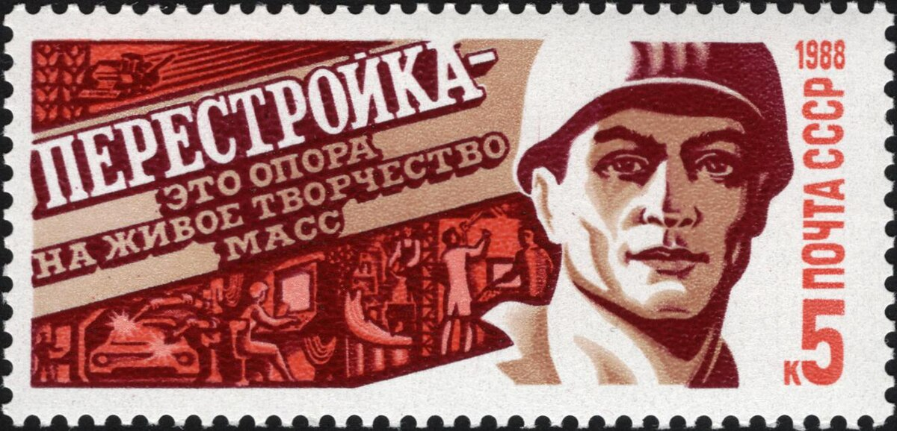
Az 1989-es Év: A Szovjet Birodalom felbomlása
A hidegháború végének egyik fontos pillanata 1989-ben következett be, amikor a szovjet blokk államai sorra kezdték el felbomlasztani a kommunista rendszereket.
A szovjet vezetés alatt álló kelet-európai országok, beleértve Lengyelországot, Magyarországot, Csehszlovákiát, és Bulgáriát,
1989-ben demokratikus átalakulásokon mentek keresztül. A Románia ezalatt kivétel volt, ugyanis véres forradalom árán sikerült Ceaușescu hatalmát megdönteni.
A berlini fal leomlása, valamint a
lengyel Szolidaritás mozgalom győzelme a kommunista kormányok ellen azt jelezte, hogy a szovjet rendszer elvesztette a
közép- és kelet-európai országok feletti uralmát.
A kelet-európai változások Gorbacsov számára is új kihívások elé állították a Szovjetuniót.
Miközben a szovjet vezetés próbálta fenntartani befolyását a térségben, az egyre erősödő függetlenségi mozgalmak és a
nemzetek autonómiára vonatkozó igényei felgyorsították a Szovjetunió felbomlásának folyamatát. Az 1990-es évek elején már világossá vált,
hogy a központi kormányzat nem képes kontrollálni az egyre inkább függetlenedő tagállamokat.
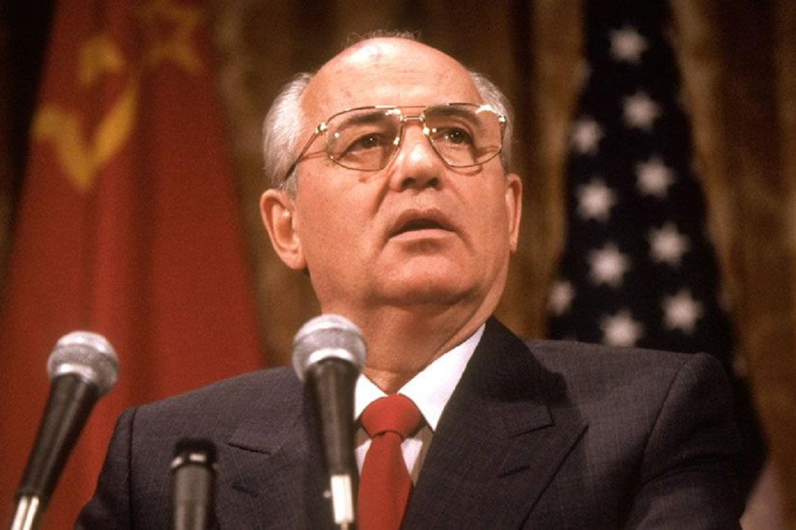
A Szovjetunió Szétesése
A Szovjetunió szétesésének legfontosabb oka a gazdasági, politikai és etnikai feszültségek összeadódása volt.
A központi kormányzattal szembeni elégedetlenség és az önállóság iránti vágy az egyes köztársaságokban,
mint például a balti államokban (Észtország, Lettország, Litvánia), Ukrajnában és Grúziában, egyre inkább szembekerült a szovjet vezetés politikájával.
A reformok, amelyek eredetileg a központi hatalom megerősítését célozták,
nemcsak hogy nem hozták meg a kívánt eredményeket, hanem gyorsították a Szovjetunió felbomlását.
1991 augusztusában puccskísérletet hajtottak végre a keményvonalas szovjet vezetők, akik elutasították Gorbacsov reformjait.
Bár a puccs megbukott, ez tovább növelte a belső feszültségeket. Decemberre a Szovjetunió hivatalosan is felbomlott, és 15 független állam alakult,
amelyek között Oroszország vált a legnagyobb és legerősebb tagállammá.

A Hidegháború Vége
A Szovjetunió szétesése nemcsak a szovjet rendszer végét jelentette, hanem a hidegháború lezárását is.
A hidegháború utolsó szakasza már a világpolitikában bekövetkezett jelentős változásokkal volt jellemezhető.
Az Egyesült Államok győzelme a hidegháborúban és a szovjet rendszer bukása lehetőséget biztosított számára,
hogy világszerte kiterjessze befolyását, és vezető szerepet játsszon a globális politikában.
A hidegháború végének következményei nemcsak a politikai térképre, hanem a globális gazdaságra is hatással voltak.
A hidegháború alatti katonai verseny, a nukleáris fegyverkezés és a politikai megosztottság helyébe egy új nemzetközi rend lépett,
amelyben az Egyesült Államok dominanciája és a kapitalizmus globális elterjedése érvényesült.
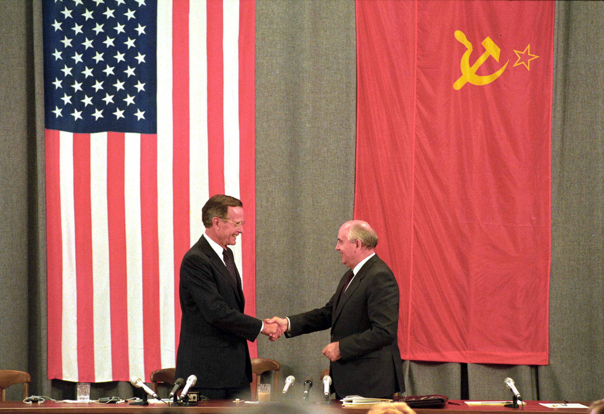